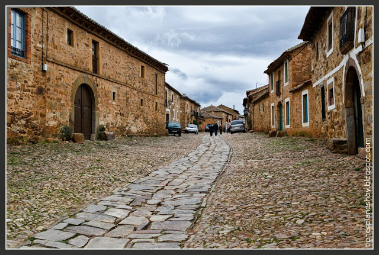

29 de septiembre de 2013

¡Oficialmente ha empezado el otoño! Sí, tal y como parece, lo decimos con emoción. Algo tiene el otoño que a mucha gente no le gusta, que si es triste, nostálgico… A nosotros nos encanta. Cuando llega el otoño se entra en una etapa de transición donde empiezas a poder cambiar algunos hábitos. Salidas a otras horas, paseos sin calor, cambio de ropa, cambio de luz, transformación de paisajes, la cámara fotográfica se vuelve loca. Y las temperaturas generalmente son suaves, no hace ni mucho frío ni mucho calor. Lo que llevas viendo durante meses comienza a transformarse lentamente…
Además, con el otoño llega el momento de empezar a hacer otro tipo de turismo, largos paseos, escapadas a la naturaleza, la explosión de los hayedos (como los populares Montejo, Selva de Iratí o la Tejera...
Etiquetas:
Castilla León, León, Rural
15 de septiembre de 2013
Dentro de todo lo que puede resaltar de Madrid, como las maravillosas e internacionales relaxing cup of café con leche in the Plaza Mayor, hay una cosa que pensamos que es bastante universal, la oferta de museos y galerías de arte que tiene la capital: El Prado, el Reina Sofía, el Thyssen… ¿A quién no le suenan estos nombres? Pero nosotros hoy vamos a acercaros a otro museo con menor repercusión popular pero que creemos que a todos os gustará… La Casa Museo de Joaquín Sorolla. Recuerdo que la primera vez que fui, o me llevaron, era pequeña. Hacía años que no volvía, pero en mi recuerdo se había quedado un lugar muy especial que, aun siendo niña, no me había parecido “un rollo de museo”, típico en esas edades, al contrario, me encantó. Es un lugar al que merece la pena acercarse,...
Etiquetas:
Castilla León, León, Rural
¡Bienvenid@!
Esperamos que en este rincón virtual encuentres la forma de pasar unos minutos agradables y algún plan para hoy. Gracias por tu interés, si es la primera vez que nos visitas, esperamos que no sea la última...
Un saludo.
tienesplaneshoy@gmail.com
También nos encontrarás aqui...